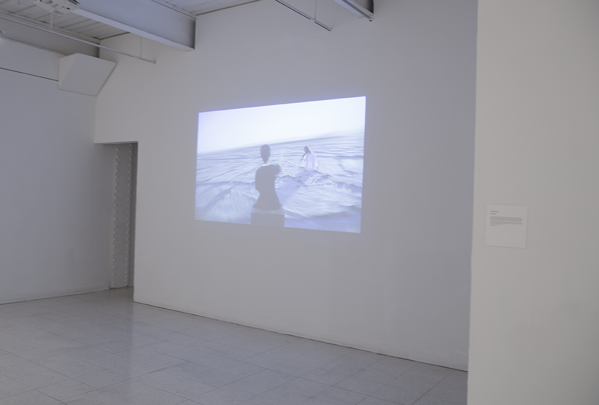

Graduate Thesis: Virtuo
In the field of cyberpsychology, there's a phenomenon called the Disappearing Computer Phenomenon, which posits that computers won't be objects, but built into the walls around us. My thesis for the MICA Post-Baccalaureate Graphic Design exhibition Impossibility features Virtuo. See how I imagine future computers as large as walls and how the future user leverages gesture technology.
Impossibility Exhibition
I created the video to be displaying on one of the largest walls of the Fox 3 Gallery on MICA's campus. The projection enabled many visitors at a time to imagine the interface. The exhibition took place on March 27th to April 12th 2015.
